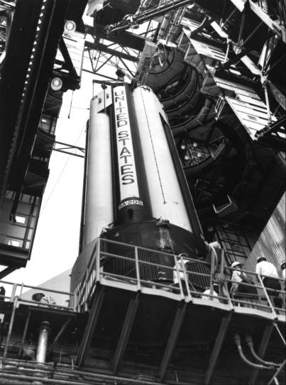
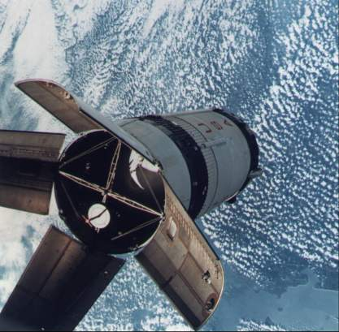
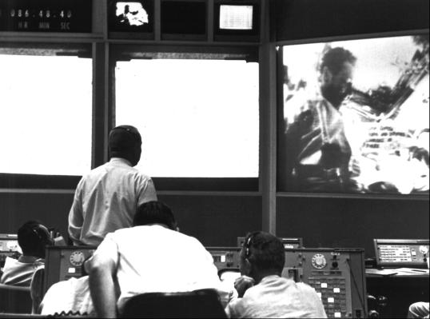
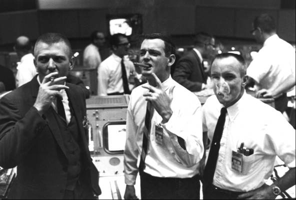
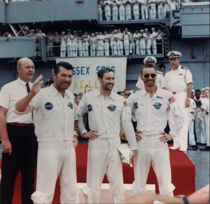

CSM-101 started through the manufacturing cycle early in 1966. By July, it had been formed, wired, fitted with subsystems, and made ready for testing. After the fire in January 1967, redefinition forced changes, mainly in the wiring, hatch areas, and forward egress tunnel. It was December before the spacecraft came back into testing. CSM-101 passed through a three-phase customer acceptance review; during the third session, held in Downey on 7 May 1968, no items showed up that might be a "constraint to launch." North American cleared up what few deficiencies there were (13) and shipped the craft to Kennedy on 30 May.23
Low had spent a lot of time thinking about a flight to the moon before 1968 ended, but Apollo 7 still was given his close attention. He probably worried about that flight more than those that followed because the earlier attempt to get a crew skyborne had ended in disaster. After rereading the evaluations of the fourth, fifth, and sixth missions, Low asked Simpkinson, one of his chief troubleshooters, to make up a "worry list" of things that might have been overlooked. He also asked John Hodge's Crew Safety Review Board to question all the "judgment decisions" that separately had made good sense, making sure that the sum of them still did. Aaron Cohen, who reviewed them for Low, concluded that, individually and collectively, these decisions had been sound. Out at North American, Dale Myers was doing the same soul-searching, looking specifically at the 137 changes that had resulted from the spacecraft 012 fire.24
All this care paid off. At the Flight Readiness Review on 20 September, Myers reported that CSM-101 was "a very good spacecraft." Walter J. Kapryan of Kennedy said the launch preparations people agreed.25 Now it was up to the flight crew to prove them right.
In October 1968, Schirra, a veteran of both Mercury and Gemini, found himself facing a situation similar to some he had encountered in previous Octobers. In 1962, his Mercury-Atlas 8 mission had been a six-orbit engineering test to see if Mercury's legs might be stretched to a full day's flight; three years later his Gemini VI had been an engineering test to attempt the first rendezvous with a second vehicle in space.
The primary objectives for Apollo 7, also an engineering test flight, were simple: "Demonstrate CSM/crew performance; demonstrate crew/space vehicle mission support facilities performance during a manned CSM mission; demonstrate CSM rendezvous capability."
Phillips wrote Webb that these objectives could be met within 3 days but that the mission would be open-ended up to 11 days "to acquire additional data and evaluate the aspects of long duration manned space flight." This did leave some time for taking pictures of weather and terrain that might be of interest to the scientific community.26
One piece of equipment got aboard Apollo 7 and all subsequent manned flights in spite of the insistence of most engineers that it was not needed and the ambivalence of the test-pilot-oriented crews. This was the television camera. Ever since September 1963, when NASA had first directed North American to install a portable camera in the spacecraft, that device had been going in and out of the craft as though it were caught in a revolving door. Wrestling with the constant problem of overweight, many engineers viewed television cameras only as nice things to have. On occasions when kilograms, and even grams, were being shaved from the command module, the camera was among the first items to go. There were those, however, who persistently argued for the inclusion of television.
NASA personnel in charge of public information activities - Julian Scheer in Washington and Paul P. Haney in Houston - naturally favored the use of television, but there was one management-level engineer in the Houston Apollo office who agreed with them. In the spring of 1964, William A. Lee wrote:
I take typewriter in hand to plead once more for including in-flight TV. . . . Since [it] has little or no engineering value, the weight penalty must be assessed against a different set of standards. . . . One [objective] of the Apollo Program is to impress the world with our space supremacy. It may be assumed that the first attempt to land on the moon will have generated a high degree of interest around the world. . . . A large portion of the civilized world will be at their TV sets wondering whether the attempt will succeed or fail. The question before the house is whether the public will receive their report of this climactic moment visually or by voice alone.27
Four springs later, following more trips through the revolving door, television became part of Apollo when Phillips told Low to install a camera on CSM-101.28

Apollo 7, first manned Apollo flight, 11-22 October 1968. The Saturn IB, like earlier launch vehicles, was assembled at the launch pad. Saturn 205's first stage rests on the pedestal at Launch Complex 34 before mating with other stages for launch.
As the Apollo 7 crew and its guests ate the traditional launch-day breakfast, a few nostalgic thoughts flitted through the minds of at least some present. For at least two members of the morning get-together, the thoughts had to be tinged with sadness. On 16 September, to the surprise of nearly everyone, Webb had announced that he was retiring on 6 October, his 62nd birthday. After almost eight years at the helm of NASA, Webb stepped down, apparently to smooth the transition to a new administration in the White House. Paine, his deputy, became acting administrator. Four days after the Webb announcement, Schirra said this would be his last mission, as he, too, planned to retire.29
So feelings of regret mixed with anticipation as more than 600 news media representatives watched the first manned Apollo flight - Apollo 7 - speed skyward from Launch Complex 34 a few minutes after 11:00 on the morning of 11 October. Once Saturn IB 205 and CSM-101 (the first Block II CSM) cleared the pad in Florida, a three-shift mission control team - led by flight directors Glynn Lunney, Eugene Kranz, and Gerald D. Griffin - in Houston took over. Schirra, Eisele, and Cunningham inside the command module had listened to the sound of propellants rushing into the firing chambers, had noticed the vehicles swaying slightly, and had felt the vibrations at ignition. Ten and a half minutes after launch, with little bumpiness and low g loads during acceleration, Apollo 7 reached the first stage of its journey, an orbital path 227 by 285 kilometers above the earth.

After launch and a rendezvous maneuver, the Apollo 7 crew examines the Saturn's S-IVB stage (above) that had placed them in orbit. Meeting no problems in the maneuver, the crew concluded that future pilots would have no difficulty docking with the lunar module.
A few hours later, as the spacecraft separated from the S-IVB stage and then turned back in a simulated docking approach, Cunningham described the S-IVB, which would be used for rendezvous target practice the next day. The spacecraft-lunar module adapter panels, he said, had not fully deployed - which naturally reminded Stafford, on the capsule communicator (CapCom) console, of the "angry alligator" target vehicle he had encountered on his Gemini IX mission. This mishap would have been embarrassing on a mission that carried a lunar module, but the panels would be jettisoned explosively on future flights.30
After this niggling problem, service module engine performance was a joy. This was one area where the crew could not switch to a redundant or backup system; at crucial times during a lunar voyage, the engine simply had to work or they would not get back home. On Apollo 7, there were eight nearly perfect firings out of eight attempts. On the first, the crew had a real surprise. In contrast to the smooth liftoff of the Saturn, the blast from the service module engine jolted the astronauts, causing Schirra to yell "Yabadabadoo" like Fred Flintstone in the contemporary video cartoon. Later, Eisele said, "We didn't quite know what to expect, but we got more than we expected." He added more graphically that it was a real boot in the rear that just plastered them into their seats. But the engine did what it was supposed to do each time it fired.31
With few exceptions, the other systems in the spacecraft operated as they should. Occasionally, one of the three fuel cells supplying electricity to the craft developed some unwanted high temperatures, but load-sharing hookups among the cells prevented any power shortage. The crew complained about noisy fans in the environmental circuits and turned one of them off. That did not help much, so the men switched off the other. The cabin stayed comfortable, although the coolant lines sweated and water collected in little puddles on the deck, which the crew expected after the Kerwin team's test in the altitude chamber. Schirra's crew vacuumed the excess water out into space with the urine dump hose.32
Visibility from the spacecraft windows ranged from poor to good, during the mission. Shortly after the launch escape tower jettisoned, two of the windows had soot deposits and two others had water condensation. Two days later, however, Cunningham reported that most of the windows were in fairly good shape, although moisture was collecting between the inner panes of one window. On the seventh day, Schirra described essentially the same conditions.
Even with these impediments, the windows were adequate. Those used for observations during rendezvous and stationkeeping with the S-IVB remained almost clear. Navigational sighting with a telescope and a sextant on any of the 37 preselected "Apollo" stars was difficult if done too soon after a waste-water dump. Sometimes they had to wait several minutes for the frozen particles to disperse. Eisele reported that unless he could see at least 40 or 50 stars at a time he found it hard to decide what part of the sky he was looking toward. On the whole, however, the windows were satisfactory for general and landmark observations and for out-the-window photography.33
Most components supported the operations and well-being of the spacecraft and crew as planned, in spite of minor irritations like smudging windows and puddling water. For example, the waste management system for collecting solid body wastes was adequate, though annoying. The defecation bags, containing a germicide to prevent bacteria and gas formation, were easily sealed and stored in empty food containers in the equipment bay. But the bags were certainly not convenient and there were usually unpleasant odors. Each time they were used, it took the crew member from 45 to 60 minutes, causing him to postpone it as long as possible, waiting for a time when there was no work to do. The crew had a total of only 12 defecations over a period of nearly 11 days. Urination was much easier, as the crew did not have to remove clothing. There was a collection service for both the pressure suits and the inflight coveralls. Both devices could be attached to the urine dump hose and emptied into space. They had half expected the hose valve to freeze up in vacuum, but it never did.34
The astronauts finally had a spacecraft large enough to move about in. During Gemini, crewmen had gone outside the craft in an exercise called extravehicular activity, or EVA. In Apollo, quite naturally, the abbreviation became IVA, for intravehicular activity. The crew adapted easily to this new free-floating realm. Schirra said, "All the problems we worried about the spacecraft picking up motions from the crew, no such thing. . . . You get to be quite a gymnast." And Cunningham later added, "The work is almost zero, and you can move any place you want to very freely, and you certainly don't need strong handholds to take care of it." The crew found exercise was important. At first, when the men slept in the couches their bodies curled up into the fetal position, which gave them lower back and abdominal pains. So they almost raced each other for a workout on a stretching device called an Exer-Genie, which relaxed their cramped and aching muscles.35
The crew slept well enough, but Schirra complained about round-the-clock operations that disrupted the normal, earth-bound routine. Sleep periods might start as early as 4:00 in the afternoon or as late as 4:00 in the morning. Slayton suggested that all three astronauts sleep at the same time, but Schirra said the machine was flying well and he did not want to make any changes. So Eisele kept watch while the others slept, and then he went to bed. Two sleeping bags were underneath the outboard couches (the center couch could be moved out of the way), and the crewmen could zip themselves into them, wearing their flight coveralls. The bags were not popular, because, they said, the restraints were in the wrong places. Cunningham preferred sleeping in the couch, strapping himself down with a shoulder harness and a lap belt. If two crewmen slept in the couches at the same time, however, one of them was always in the way of spacecraft operations. After the third day, the crew had worked out a routine that allowed all of them to get enough sleep.36
Although the astronauts had more than 60 food items to choose from, giving them about 2,500 calories a day, they were not happy with their fare. The bite-size food crumbled and stray particles floated around the cabin. They almost came to hate the high-energy sweets and tried to talk each other out of the more satisfactory breakfast items. Following his Gemini flight, Schirra had said that if he flew on Apollo he was going to take some coffee with him. And he did. During flight and later, the crew emphasized that space food was a long way from satisfying their normal table habits.37

Mission Control watches the first live television beamed by an American spacecraft, as Eisele and Schirra signal, "Keep Those Cards and Letters Coming in, Folks."
The astronauts did use the controversial television camera to show their colleagues in mission control and the public everywhere how they got along in their living quarters, operated the spacecraft, ate, and swam about in the weightlessness of space. When flight plan changes crowded their schedule, Schirra canceled the first of several planned television demonstrations. Slayton tried to change his mind, but the spacecraft commander told him sharply that there would be no show that day. The programs finally began, however, and the crew appeared to enjoy them, using cue cards - "Keep Those Cards and Letters Coming In, Folks" and "Hello from the Lovely Apollo Room High Atop Everything" - supplied by Michael Kapp,* who also provided cassettes for their musical enjoyment.38
Some of the crew's grumpiness during the mission could be attributed to physical discomfort. About 15 hours into the flight, Schirra developed a bad cold, and Cunningham and Eisele soon followed suit. A cold is uncomfortable enough on the ground; in weightless space it presents a different problem. Mucus accumulates, filling the nasal passages, and does not drain from the head. The only relief is to blow hard, which is painful to the ear drums. So the crewmen of Apollo 7 whirled through space suffering from stopped up ears and noses. They took aspirin and decongestant tablets and discussed their symptoms with the doctors.
Several days before the mission ended, they began to worry about wearing their suit helmets during reentry, which would prevent them from blowing their noses. The buildup of pressure might burst their eardrums. Slayton, in mission control, tried to persuade them to wear the helmets, anyway, but Schirra was adamant. They each took a decongestant pill about an hour before reentry and made it through the acceleration zone without any problems with their ears.39

At the end of the nearly 11-day mission, flight controllers Gene Kranz, Glynn Lunney, and Gerald Griffin (left to right with cigars) celebrate splashdown.
That "magnificent flying machine," as Cunningham called it, circled the earth for more than 260 hours. On 22 October, the crew brought the ship down in the Atlantic southeast of Bermuda, less than two kilometers from the planned impact point. On landing, the craft turned nose down, but the crew quickly inflated the air bags and the ship righted itself. The tired, but happy, voyagers were picked up by helicopter and deposited on the deck of the U.S.S. Essex.40

A grizzled but happy Apollo 7 crew - Schirra, Eisele, and Cunningham (left to right) - greets the crew of recovery ship U.S.S. Essex. Donald Stullken, inventor of the flotation collar attached to the spacecraft during recovery, is at the extreme left.
Apollo 7 accomplished what it set out to do - qualifying the command and service module and clearing the way for the proposed lunar-orbit mission to follow. And its activities were of national interest. A special edition of NASA's news clipping collection called "Current News" included front page stories from 32 major newspapers scattered over the length and breadth of the nation. Although the postmission celebrations41 may not have rivaled those for the first orbital flight of an American, John Glenn in 1962, enthusiasm was high - and this fervor would build to even greater heights each time the lunar landing goal drew one step closer.
* Producer of the Bill Dana "Jose Jimenez in Orbit" record album in the 1960s and provider of many of the music tapes broadcast to the Gemini crews from mission control.
23. Quarterly Status Rept. no.24, pp. 39-40; minutes of Customer Acceptance Readiness Review (CARR) Phase III Pre-Board Meeting, CSM 101, 7 May 1968, p. 2; OMSF Weekly Rept., 31 May 1968.
24. Low to Simpkinson, "'Worry list' from postflight reports," 13 June 1968; Donald D. Arabian to Mgr., ASPO, "'Worry List' as a result of Apollo 6 mission," 24 June 1968; Low to Dir., MSC, "Judgment type decisions," 1 Oct. 1968, with enc., Aaron Cohen to Mgr., CSM, "CSM program decisions," 24 Sept. 1968; Myers to Low, 12 Sept. 1968.
25. Harmon L. Brendle, secretary, minutes of Flight Readiness Review Board Meeting at KSC, 20 Sept. 1968.
26. Phillips to Admin., NASA, "Apollo 7 Mission (AS-205)," 1 Oct. 1968, with enc.; Wilmot N. Hess to Dir., Flight Crew Ops., "Photography from the Apollo 7 mission," 9 Oct. 1968.
27. Henry P. Yschek, MSC, to North American, Contract Change Authorization 95, 24 Sept. 1963; William A. Lee to Mgr., ASPO, "The case for television transmission during LEM descent and ascent," 27 April 1964.
28. Borman to Myers, "Television Equipment Utilization," 11 May 1967; Phillips to Mgr., ASPO, "Apollo On-board TV," 10 April 1968.
29. MSC, "Apollo 7 Mission Commentary," 11 Oct. 1968, tape 10-1; NASA, Astronautics and Aeronautics, 1968, pp. 212-13, 220.
30. NASA News Center, "Apollo 7 Accreditation," n.d.; Maj. Gen. Vincent G. Huston, ETR, to Sec. of Defense, "Apollo 7 Mission Summary," 9 Dec. 1968, with enc., subj. as above, p. 8; Phillips to Admin., NASA, 1 Oct. 1968, p. 86 of enc.; Christopher C. Kraft, Jr., memo, "Flight Control Manning for Apollo 7," 17 Sept. 1968, with enc.; MSC news release 68-28, 3 April 1968; MSC, "Apollo 7 Prime Crew News Conference," 20 Sept. 1968, tape 1A-3; Phillips to Admin., NASA, "Apollo 7 Mission (AS-205), Post Launch Report #1," 27 Dec. 1968, with enc., p. 3; MSC, "Apollo VII Technical Debriefing," 27 Oct. 1968, pt. 1, pp. 15-17; "Apollo 7 Mission Commentary," 10 Oct., tape 35-1, 11 Oct. 1968, tape 27-1; John D. Stevenson to OMSF Safety Dir., "MCC Power Failure during Apollo 7," 29 Oct. 1968; MSC, "Apollo 7 Air-to-Ground Voice Transcriptions," n.d., p. 28; JSC, p. F-5; Low to Rocco A. Petrone, 8 Nov. 1968.
31. MSC: "Apollo 7 Voice," p. 135; "Apollo VII Debriefing," pt. 1, pp. 45, 47; "Apollo 7 Mission Report," MSC-PA-R-68-15, December 1968, pp. 3-2 through 3-5.
32. Phillips to Admin., NASA, 27 Dec. 1968, p. 3 of enc.; "Apollo 7 Mission Commentary," 14 Oct., tape 275-1, 21 Oct. 1968, tape 690-1; "Apollo 7 Mission Report," p. 5-169; "Apollo VII Debriefing," pt. 1, p. 157; David Bell III and Fulton M. Plauche, "Power Generation System," Apollo Experience Report (AER), NASA Technical Note (TN) S-347 (MSC-04587), review copy, October 1972, pp. 13-14; Frank H. Samonski, Jr., and Elton M. Tucker, "Command and Service Module Environmental Control System," AER TN S-279 (MSC-04374), review copy, May 1971, p. 26.
33. "Apollo 7 Mission Report," p. 5-185; "Apollo VII Debriefing," pt. 2, pp. 45-47; Collins, Carrying the Fire, p. 286; "Apollo 7 Mission Commentary," 13 Oct., tape 179-2, 17 Oct. 1968, tape 426-2; "Apollo 7 Crew Debriefing @ MSC 10/27/68 (C[arl R.] Liebermann Notes)"; L[ubert] J. Leger and R[ichard] W. Bricker, "Window Contamination," AER TN S-284 (MSC-04332), review copy, September 1971; "Apollo 7 Voice," pp. 117, 441-42, 501, 617-18, 804-05, 852.
34. Phillips to Admin., NASA, 1 Oct. 1968, p. 53 of enc.; "Apollo 7 Mission Report," p. 5-172; Williard R. Hawkins et al., "Biomedical Evaluation of the Apollo 7 Mission," MSC Internal Note 70-DD-01, December 1970, p. 4-77; Samonski and Tucker, "CSM Environmental Control System," pp. 25-26.
35. "Apollo 7 Crew Conference," tapes 2-1, 2-2; Hawkins et al., "Biomedical Evaluation," pp. 4-54, 4-55, 4-65; "Apollo 7 Voice," pp. 182, 250, 643.
36. Phillips to Admin., NASA, 1 Oct. 1968, pp. 53-54 of enc.; Hawkins et al., "Biomedical Evaluation," p. 4-62; "Apollo 7 Voice," pp. 180-82, 216, 497; "Apollo 7 Mission Commentary," 12 Oct., tape 151-1, 13 Oct. 1968, tapes 167-1, 167-2.
37. NASA, "Project: Apollo 7," press kit, news release 68-168K, 27 Sept 1968, pp. 58, 59-62; "Apollo VII Debriefing," Part 2, pp. 310-12; "Apollo 7 Mission Commentary," 11 Oct., tape 41-1, 16 Oct. 1968, tape 396-1; "Apollo 7 Voice," pp. 438, 445, 679.
38. Michael Kapp to Fred C. Durant, National Air and Space Museum, 26 March 1975; "Apollo 7 Voice," pp. 115-16, 738; "Apollo 7 Mission Commentary," 12 Oct., tape 103-11, 14 Oct., tapes 247-2, 247-3, 249-1, 249-2, 15 Oct., tapes 310-1 through 310-3, 313-1, 16 Oct., tapes 381-1 through 381-3, 17 Oct., tapes 435-2 through 435-5, 19 Oct., tapes 568-1 through 568-3, 20 Oct. 1968, tapes 633-1 through 633-3.
39. "Apollo 7 Mission Report," p. 6-22; Hawkins et al., "Biomedical Evaluation," pp. 4-56 through 4-59; "Apollo 7 Mission Commentary," 12 Oct., tapes 78-1, 102-1, 102-2, 14 Oct., tape 287-2, 17 Oct. 1968, tapes 450-1, 479-1; "Apollo 7 Voice," pp. 917-21.
40. "Apollo 7 Voice," p. 1132; Robert D. White, "Command Module Uprighting System," AER TN S-338 (MSC-04944), review copy, April 1972; Phillips to Admin., 27 Dec. 1968, pp. 3-4 of enc.; "Apollo 7 Mission Report," p. 2-2.
41. "NASA Current News: Apollo 7 Special," 30 Oct. 1968; MSC, "Apollo 7 Presidential Awards Ceremony, LBJ Ranch," 2 Nov. 1968, tapes 1-1, 1-2; MSC, "Apollo 7 Astronauts Post-Flight Press Conference, LBJ Ranch," 2 Nov. 1968, tapes 29A-1, 29A-2; "Poll Shows Support for Nixon's 'First in Space Goal," Space Business Daily, 16 Dec. 1968, pp. 197-98.